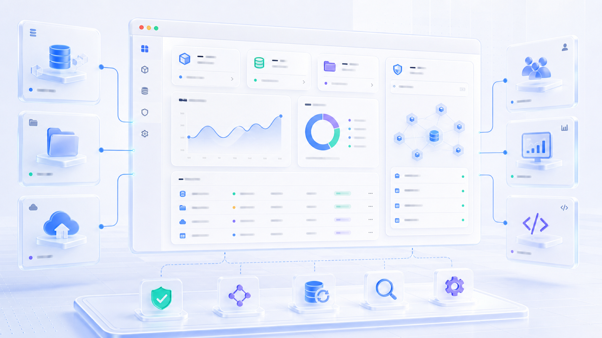
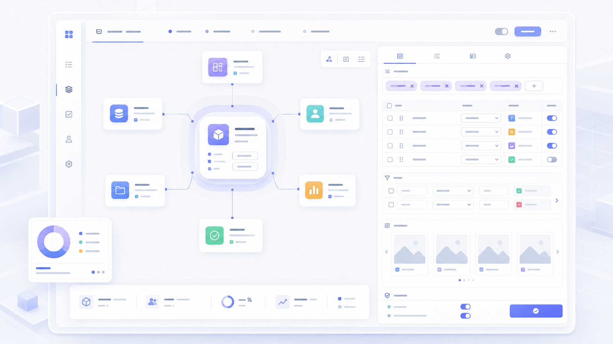
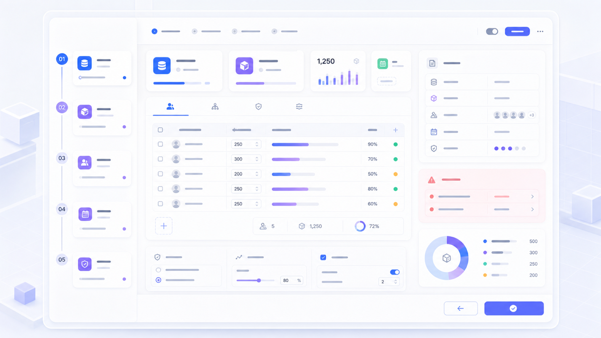
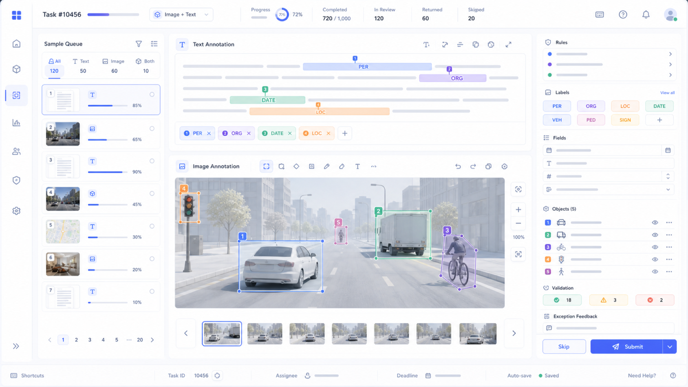
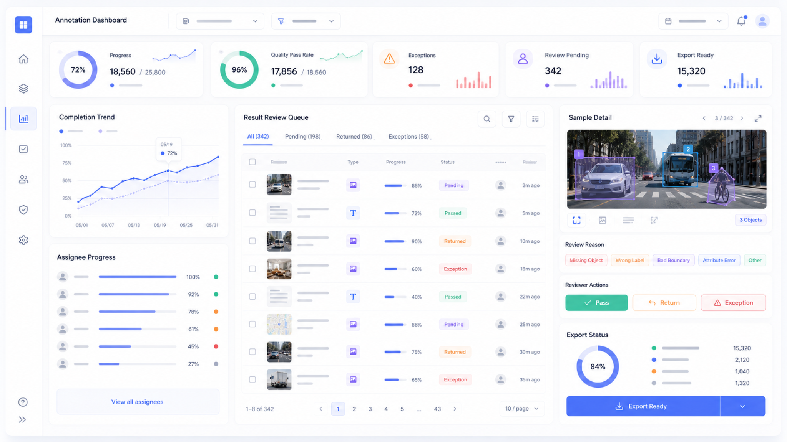
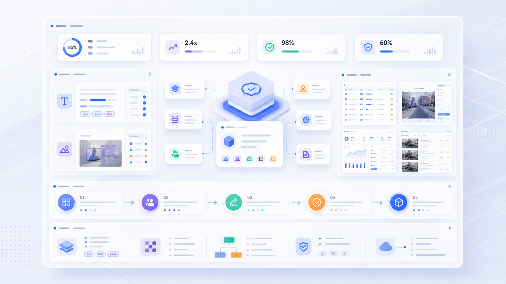

统一任务规则
用模板承载字段、标签、规则、示例和校验，让每次任务创建都有稳定结构。
数据标注服务平台
一个面向 AI 数据生产流程的内部平台，将分散在文档、表格和人工沟通中的标注协作，整理成可配置、可分发、可执行、可追踪、可验收的生产系统。
01 项目背景
AI 数据标注不是把样本发给执行人员这么简单。一个完整任务通常包含数据集准备、模板和规则定义、人员分配、标注执行、异常处理、进度追踪、结果复核和最终导出。
在没有统一平台时，这些环节会被拆散到表格、文档、聊天工具和人工检查中。管理人员很难判断任务是否正常推进，执行人员也难以确认规则、提交要求和异常反馈是否一致。
核心问题：如何把数据标注从一次性的人工协作，设计成一套规则清晰、状态透明、结果可回收的平台化生产流程？

02 设计目标
用模板承载字段、标签、规则、示例和校验，让每次任务创建都有稳定结构。
管理端关注创建、分发、进度和验收，执行端关注规则理解、标注效率和提交反馈。
针对文本和图片两类高频工作台，减少视线跳转和重复操作，并保留明确的异常入口。
把进度、质量、异常和验收状态前置，让管理人员能判断哪些结果可以继续使用。
03 设计挑战
数据标注平台不能只做任务列表。它需要同时承接标准化生产、不同标注类型的操作差异，以及管理人员和执行人员完全不同的关注点。
04 信息架构设计
信息架构没有按功能菜单堆叠，而是围绕标注任务生命周期组织入口：先用模板定义规则，再用任务承载数据和人员分配，执行端围绕任务完成标注，管理端持续查看进度和异常，最后进入结果验收与导出。
05 任务对象与模板设计
我将 Annotation Task 作为核心对象。模板定义任务规则，数据集提供待处理样本，执行人员在工作台完成标注，进度和结果验收持续回写到同一个任务对象上。
模板是标注服务的基础能力，需要把任务类型、字段结构、标签体系、规则说明、示例、校验条件和提交要求沉淀为可复用配置，避免每次创建任务都重新解释规则。


06 任务创建与分发设计
任务创建是从规则进入生产的关键节点。设计上避免“填完表单就发布”，而是让管理人员按顺序确认数据集、模板、人员、时间、任务量和质量策略。
07 标注工作台设计

页面中心保留样本文本，右侧集中承载标签、字段和提交操作；规则说明和示例不离开当前工作台，提交后直接进入下一条。
左侧提供图片队列，中心保留大画布和缩放拖拽操作；区域框、对象列表和标签状态保持联动，减少漏标和重复标注。
08 进度管理与结果验收设计
进度管理和结果验收是平台化流程的收口。管理人员不仅要看完成率，还要看人员进度、异常样本、待复核结果、退回记录和可导出状态。


09 项目价值与成果
对标注人员，平台把样本、规则、字段、标签和提交反馈放回同一工作台，减少反复查文档和询问管理人员；对管理人员，任务进度、人员状态、异常结果和验收队列让风险更早暴露；对平台侧，模板配置、任务分发、标注工作台、进度监控和结果验收可以复用到后续更多数据生产场景。